Phone-width render (358 px figure area), light and dark theme, 2× pixel density.
Validation: pass
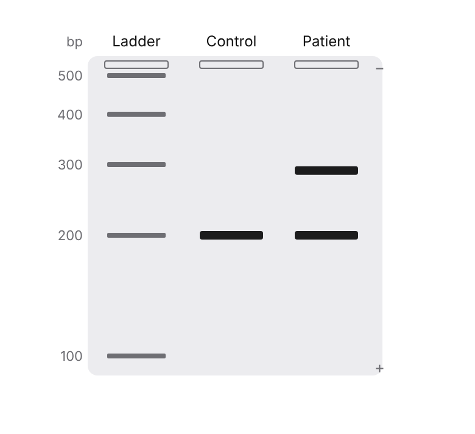
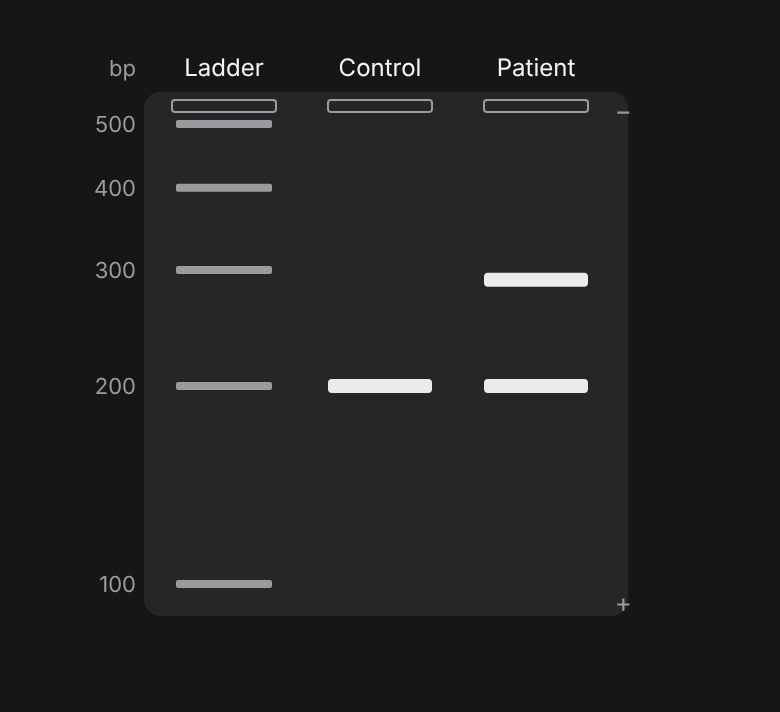
Alt: Agarose gel: the control lane has one band at 200 bp; the patient lane has bands at 200 bp and 290 bp.
Text description: Agarose gel. Ladder: 500, 400, 300, 200, 100 bp. Control: 200 bp. Patient: 200 bp, 290 bp.
Caption: PCR across the HTT CAG repeat (illustrative product sizes).
Validation: pass
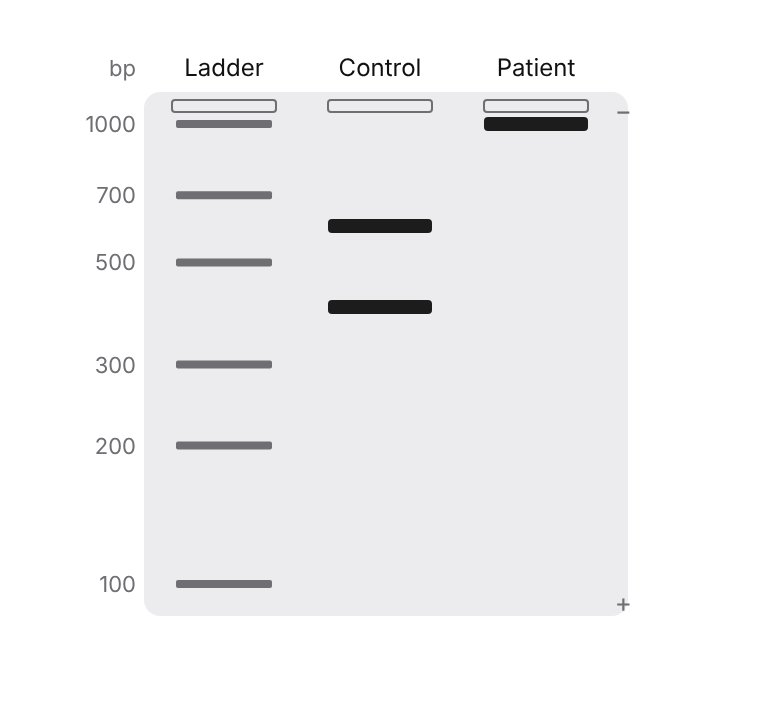
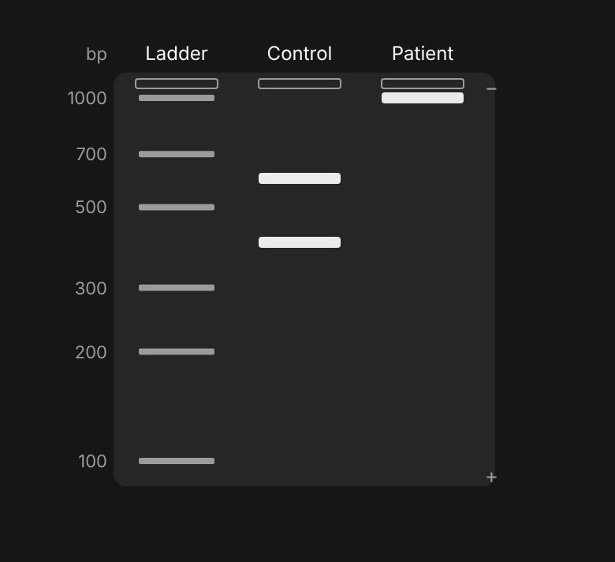
Alt: Agarose gel: the control digest gives bands at 600 and 400 bp; the patient gives a single band at 1000 bp.
Text description: Agarose gel. Ladder: 1000, 700, 500, 300, 200, 100 bp. Control: 600 bp, 400 bp. Patient: 1000 bp.
Caption: Restriction digest of the same gene region (illustrative sizes).
Validation: pass
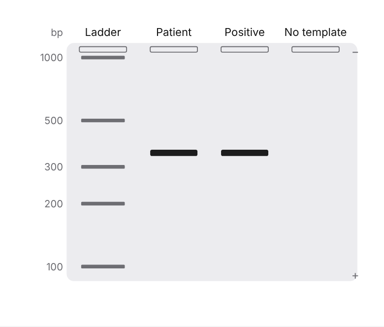
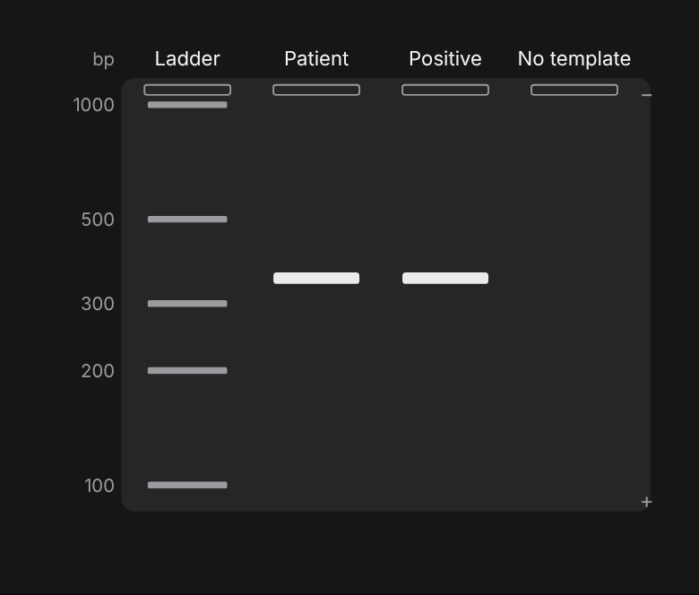
Alt: Agarose gel: patient and positive-control lanes each show a 350 bp band; the no-template control lane is empty.
Text description: Agarose gel. Ladder: 1000, 500, 300, 200, 100 bp. Patient: 350 bp. Positive: 350 bp. No template: no band.
Caption: Pathogen-specific PCR with controls.
Validation: pass
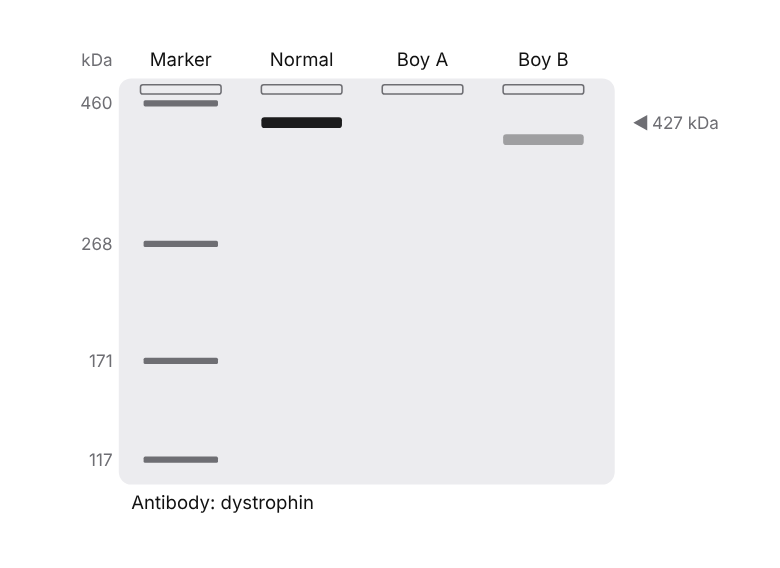
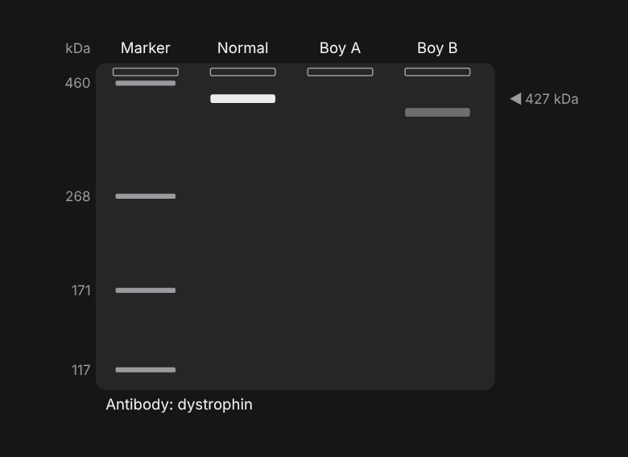
Alt: Western blot for dystrophin: strong band at 427 kDa in normal muscle, no band in boy A, a faint smaller band near 400 kDa in boy B.
Text description: Western blot for dystrophin. Markers: 460, 268, 171, 117 kDa. Normal: strong band at 427 kDa. Boy A: no band at 427 kDa. Boy B: faint band at 400 kDa.
Caption: Muscle biopsy Western blot with equal protein loaded per lane (illustrative sizes). A lane with no band means no dystrophin detected; the arrowhead outside the membrane marks where normal dystrophin runs.
Validation: pass
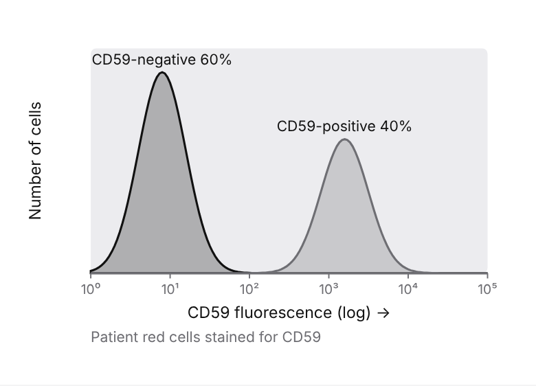
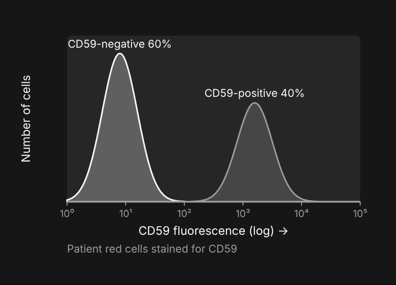
Alt: Flow histogram of red cells: a large peak at very low CD59 fluorescence (60% of cells) and a smaller peak at normal CD59 fluorescence (40%).
Text description: Flow cytometry histogram of patient red cells stained for cd59, CD59 fluorescence on a log scale. CD59-negative: 60% of cells, peak at low fluorescence (about 10^0.9). CD59-positive: 40% of cells, peak at intermediate fluorescence (about 10^3.2).
Caption: Peak area reflects the share of cells (illustrative values).
Validation: pass
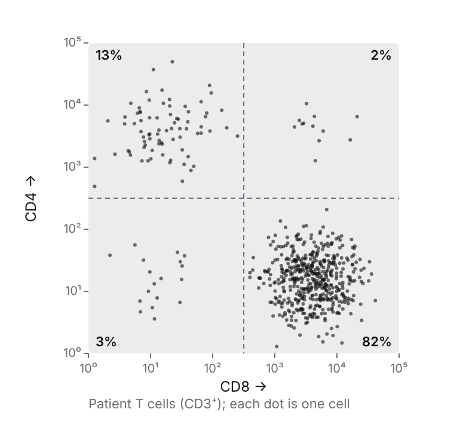
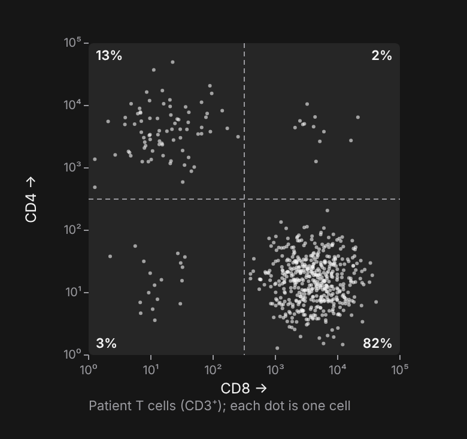
Alt: Dot plot of T cells with CD8 on the x-axis and CD4 on the y-axis: 82% of cells in the lower-right quadrant (CD8-positive) and 13% in the upper-left (CD4-positive).
Text description: Flow cytometry dot plot of patient t cells (cd3⁺): CD8 on the x-axis, CD4 on the y-axis; each dot is one cell. Lower left (CD8⁻ CD4⁻) 3%, lower right (CD8⁺ CD4⁻) 82%, upper left (CD8⁻ CD4⁺) 13%, upper right (CD8⁺ CD4⁺) 2%.
Caption: Quadrant percentages are illustrative.
Validation: pass
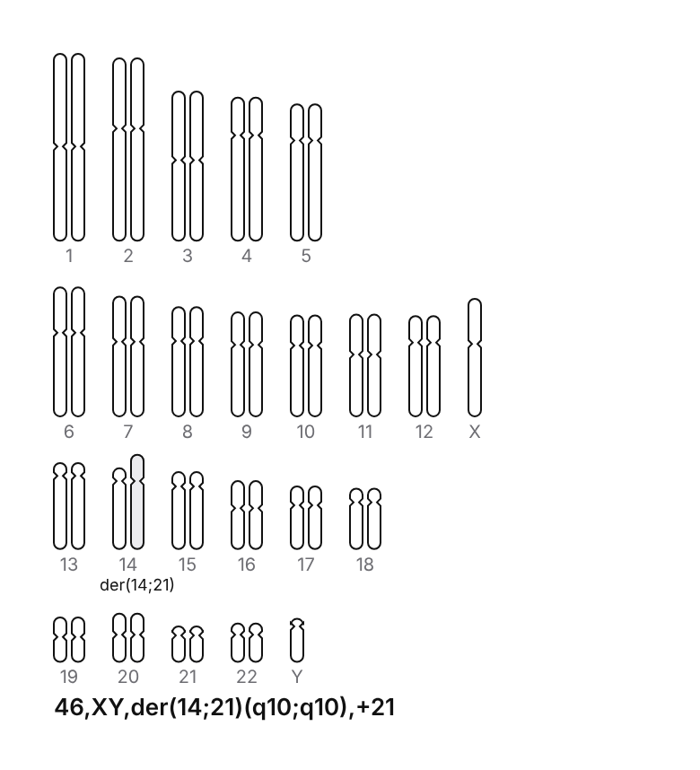
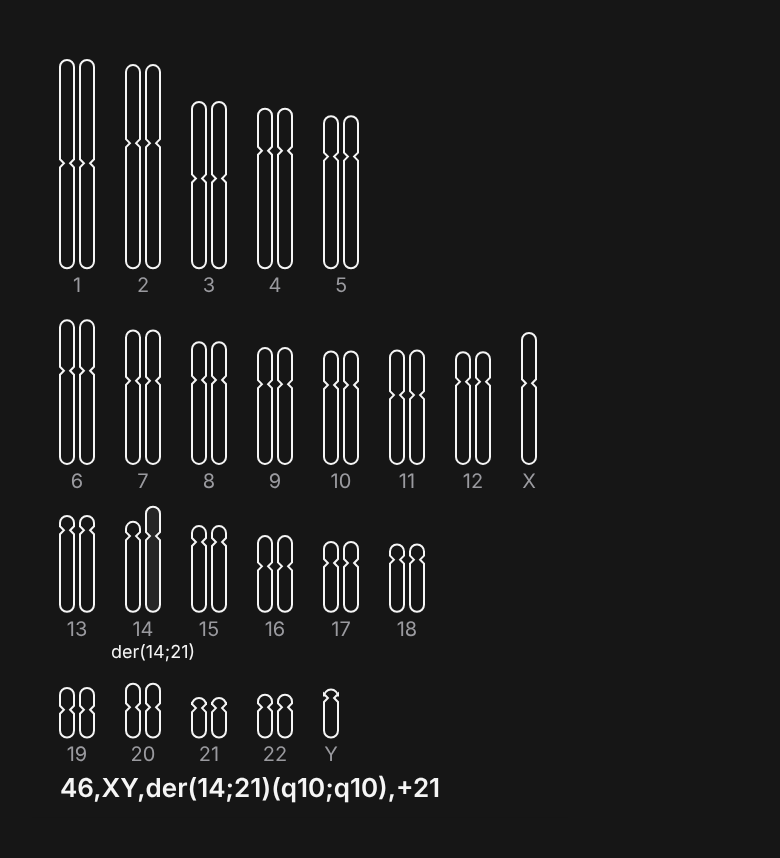
Alt: Karyogram with 46 chromosomes: one chromosome 14 and one 21 are fused into a single derivative chromosome, and two free chromosome 21s are present, giving three copies of 21q.
Text description: Karyogram 46,XY,der(14;21)(q10;q10),+21: 46 chromosomes arranged in pairs by size; sex chromosomes XY. Changes: one chromosome 14 and one chromosome 21 joined at their centromeres (Robertsonian translocation); three copies of chromosome 21.
Caption: Schematic karyogram (no banding detail).
Validation: pass
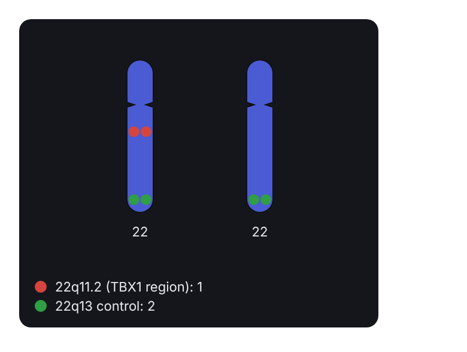
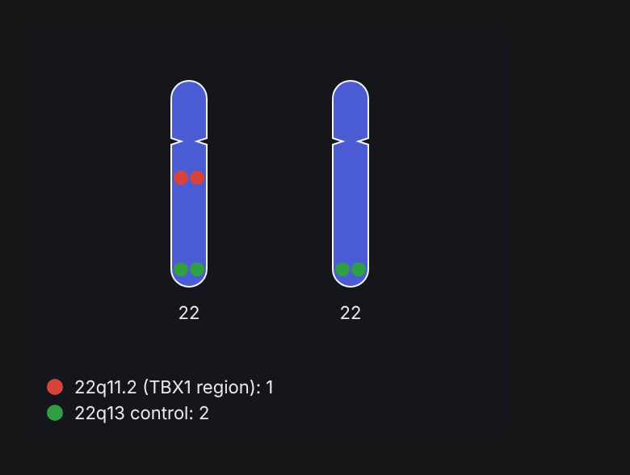
Alt: Metaphase FISH of chromosome 22: the green control probe lights both chromosome 22s; the red 22q11.2 probe lights only one.
Text description: FISH on metaphase chromosomes 22. red probe for 22q11.2 (TBX1 region): 1 signal; green probe for 22q13 control: 2 signals. Red signal on only one homologue; Green signal on both homologues.
Caption: The deletion (about 3 Mb) is too small to see on a routine karyotype; the missing red signal reveals it.
Validation: pass
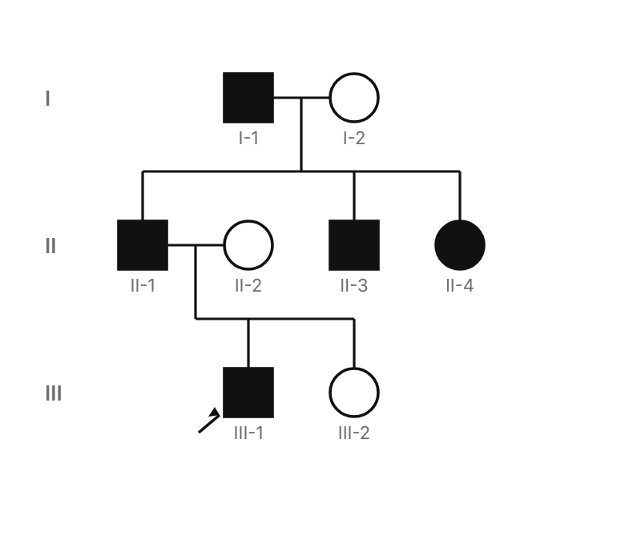
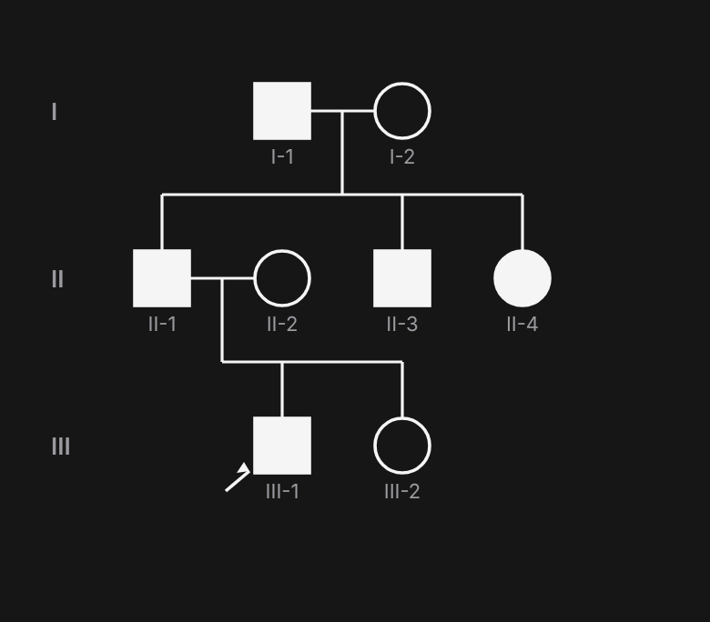
Alt: Three-generation pedigree: an affected grandfather has two affected sons and an affected daughter; one affected son has an affected son and an unaffected daughter.
Text description: Pedigree. Generation I: I-1 male, affected; I-2 female, unaffected. Generation II: II-1 male, affected; II-2 female, unaffected; II-3 male, affected; II-4 female, affected. Generation III: III-1 male, affected (proband); III-2 female, unaffected. I-1 and I-2 have II-1, II-3, II-4. II-1 and II-2 have III-1, III-2.
Validation: pass
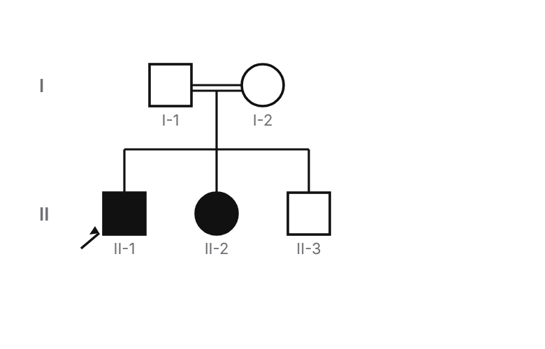
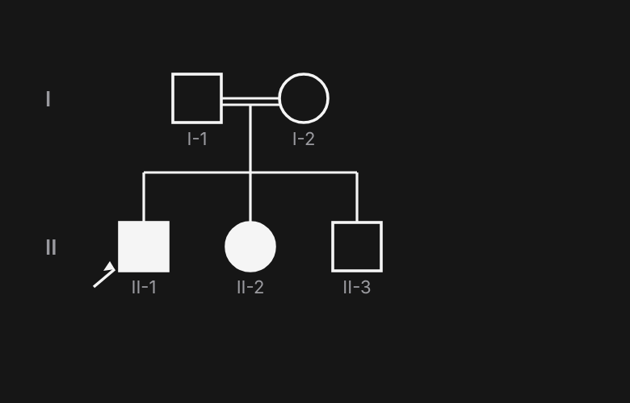
Alt: Pedigree: unaffected first-cousin parents (double line) have an affected son, an affected daughter and an unaffected son.
Text description: Pedigree. Generation I: I-1 male, unaffected; I-2 female, unaffected. Generation II: II-1 male, affected (proband); II-2 female, affected; II-3 male, unaffected. I-1 and I-2 (related) have II-1, II-2, II-3.
Caption: Double line = consanguineous (related) couple.
Validation: pass
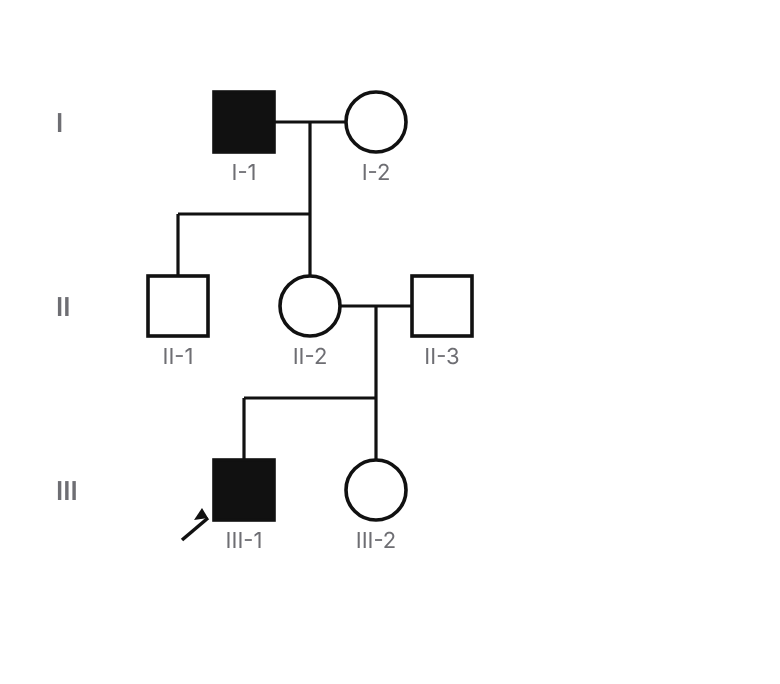
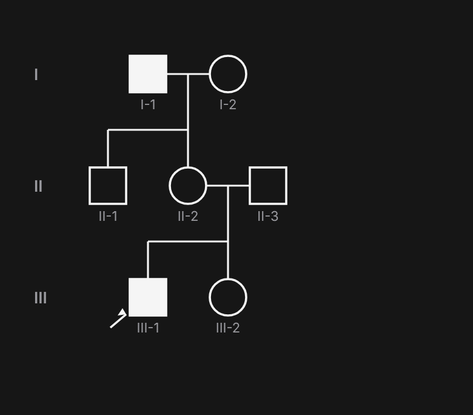
Alt: Pedigree: an affected man has an unaffected son and an unaffected daughter; the daughter’s son is affected.
Text description: Pedigree. Generation I: I-1 male, affected; I-2 female, unaffected. Generation II: II-1 male, unaffected; II-2 female, unaffected; II-3 male, unaffected. Generation III: III-1 male, affected (proband); III-2 female, unaffected. I-1 and I-2 have II-1, II-2. II-3 and II-2 have III-1, III-2.
Validation: pass
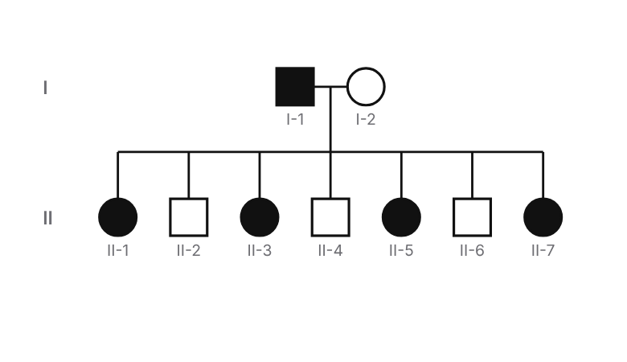
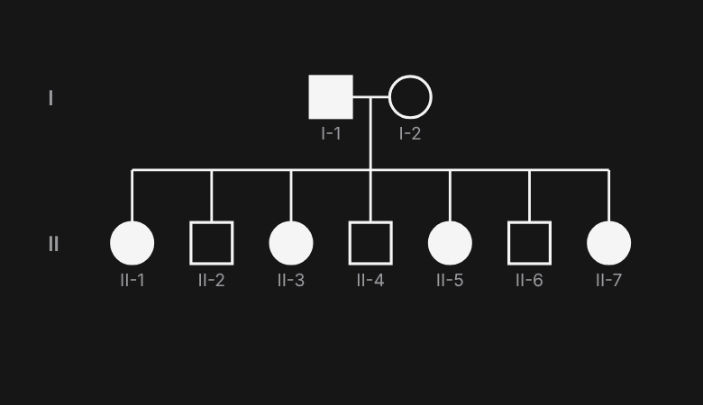
Alt: Pedigree: an affected father and a noncarrier mother have four affected daughters and three unaffected sons.
Text description: Pedigree. Generation I: I-1 male, affected; I-2 female, unaffected. Generation II: II-1 female, affected; II-2 male, unaffected; II-3 female, affected; II-4 male, unaffected; II-5 female, affected; II-6 male, unaffected; II-7 female, affected. I-1 and I-2 have II-1, II-2, II-3, II-4, II-5, II-6, II-7.
Validation: pass
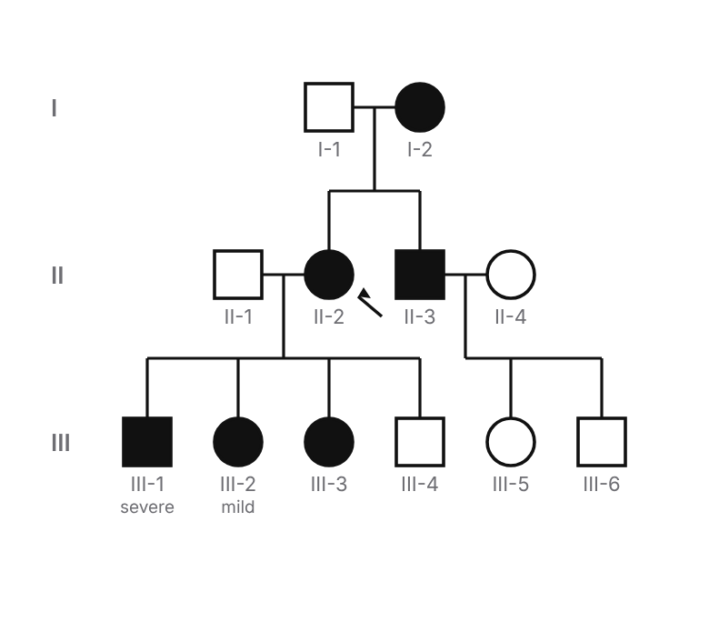
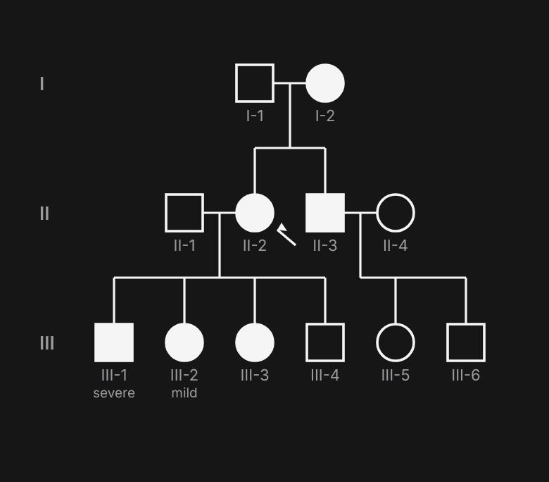
Alt: Pedigree: an affected grandmother has an affected daughter and an affected son. The daughter has three affected children of varying severity and one unaffected child; the son’s two children are unaffected.
Text description: Pedigree. Generation I: I-1 male, unaffected; I-2 female, affected. Generation II: II-1 male, unaffected; II-2 female, affected (proband); II-3 male, affected; II-4 female, unaffected. Generation III: III-1 male, affected (severe); III-2 female, affected (mild); III-3 female, affected; III-4 male, unaffected; III-5 female, unaffected; III-6 male, unaffected. I-1 and I-2 have II-2, II-3. II-1 and II-2 have III-1, III-2, III-3, III-4. II-3 and II-4 have III-5, III-6.
Validation: pass
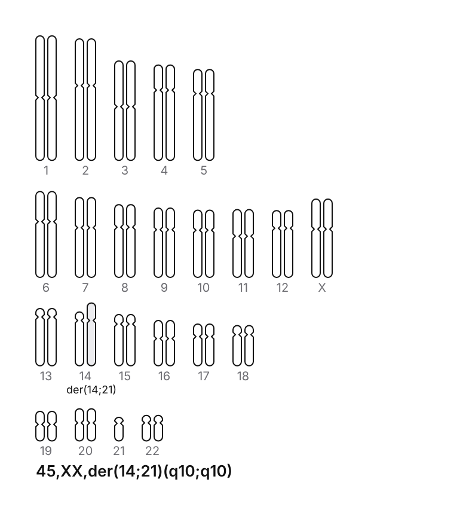
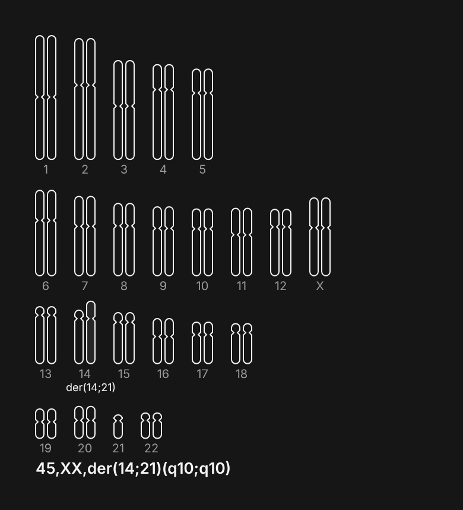
Alt: Karyogram with 45 chromosomes: one chromosome 14 and one chromosome 21 are fused into a single derivative chromosome; one free 14 and one free 21 remain.
Text description: Karyogram 45,XX,der(14;21)(q10;q10): 45 chromosomes arranged in pairs by size; sex chromosomes XX. Changes: one chromosome 14 and one chromosome 21 joined at their centromeres (Robertsonian translocation).
Caption: Balanced carrier: no 21q material is missing or extra.
Validation: pass
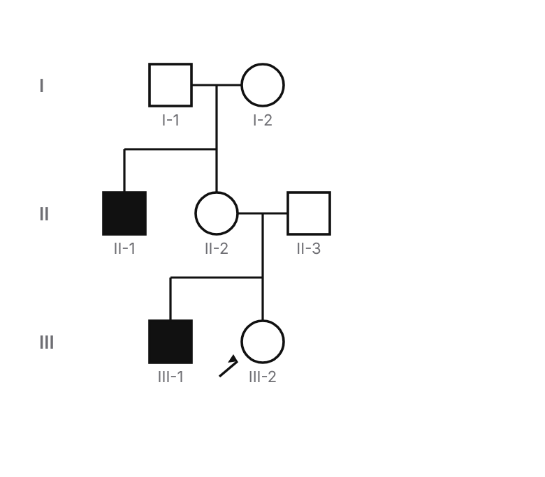
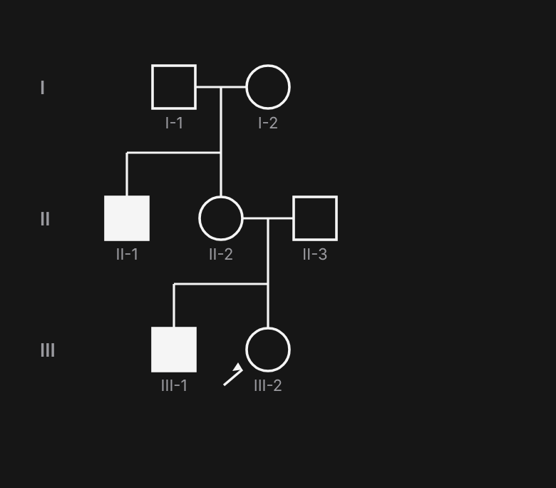
Alt: Pedigree: the proband’s maternal uncle and her brother have hemophilia A; her parents and maternal grandparents are unaffected.
Text description: Pedigree. Generation I: I-1 male, unaffected; I-2 female, unaffected. Generation II: II-1 male, affected; II-2 female, unaffected; II-3 male, unaffected. Generation III: III-1 male, affected; III-2 female, unaffected (proband). I-1 and I-2 have II-1, II-2. II-3 and II-2 have III-1, III-2.
Validation: pass
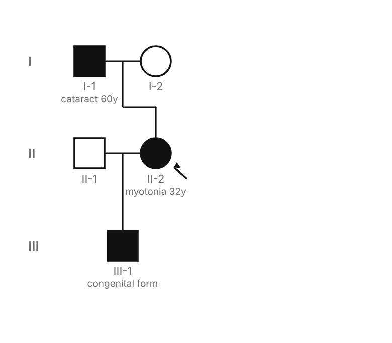
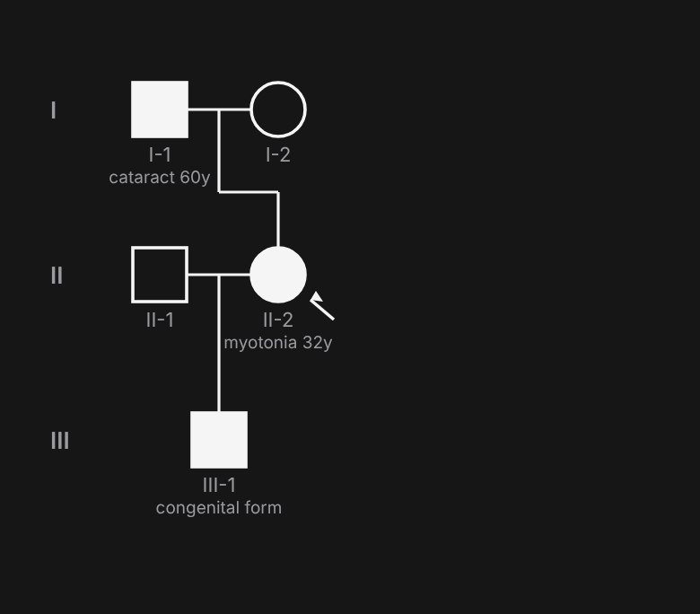
Alt: Three-generation pedigree: a grandfather with cataracts at 60, his daughter with myotonia at 32, and her son with the congenital form at birth.
Text description: Pedigree. Generation I: I-1 male, affected (cataract 60y); I-2 female, unaffected. Generation II: II-1 male, unaffected; II-2 female, affected (proband) (myotonia 32y). Generation III: III-1 male, affected (congenital form). I-1 and I-2 have II-2. II-1 and II-2 have III-1.
Caption: Earlier, more severe disease in each generation; the congenital form is transmitted almost always by the mother.
Validation: pass
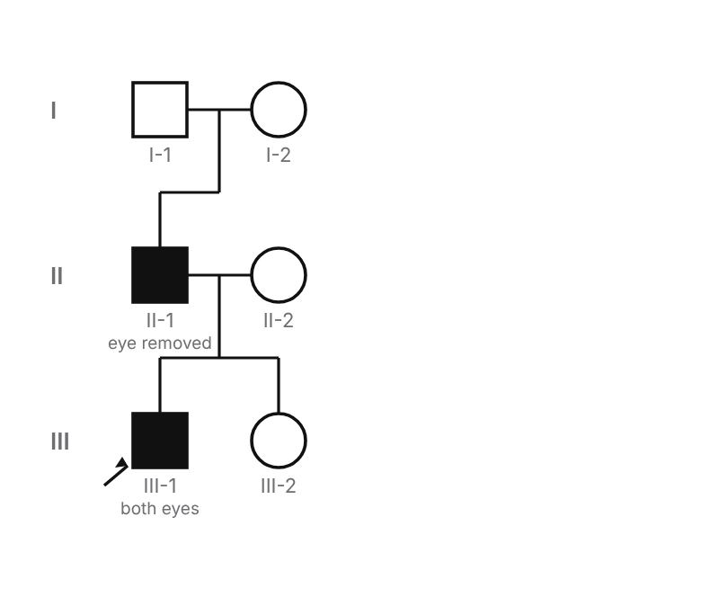
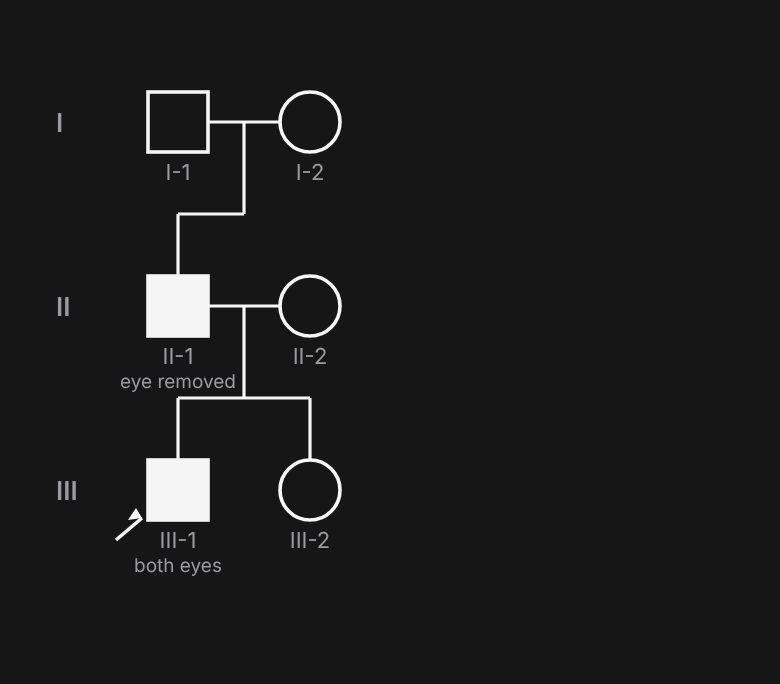
Alt: Pedigree: the father had retinoblastoma (new in him; his parents unaffected); his son has bilateral retinoblastoma and his daughter is unaffected.
Text description: Pedigree. Generation I: I-1 male, unaffected; I-2 female, unaffected. Generation II: II-1 male, affected (eye removed); II-2 female, unaffected. Generation III: III-1 male, affected (proband) (both eyes); III-2 female, unaffected. I-1 and I-2 have II-1. II-1 and II-2 have III-1, III-2.
Validation: pass
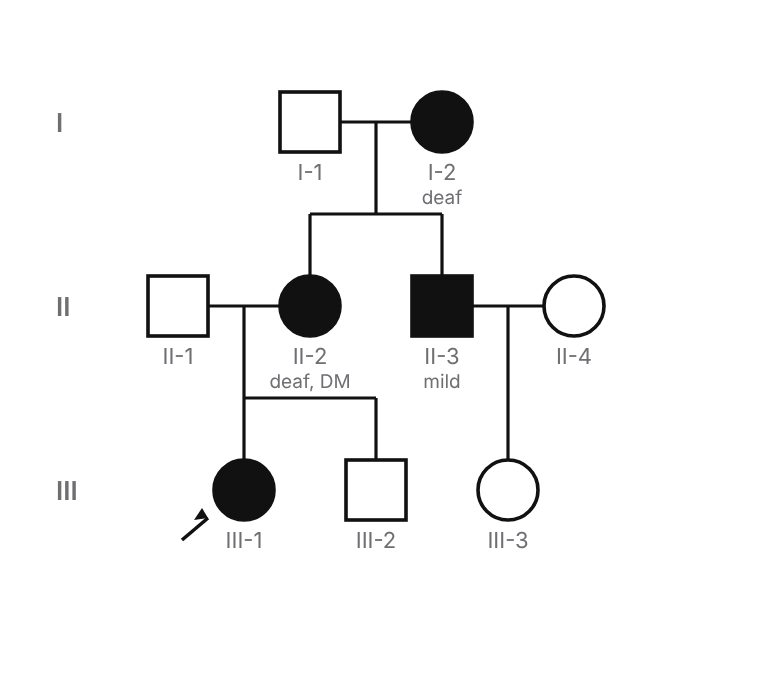
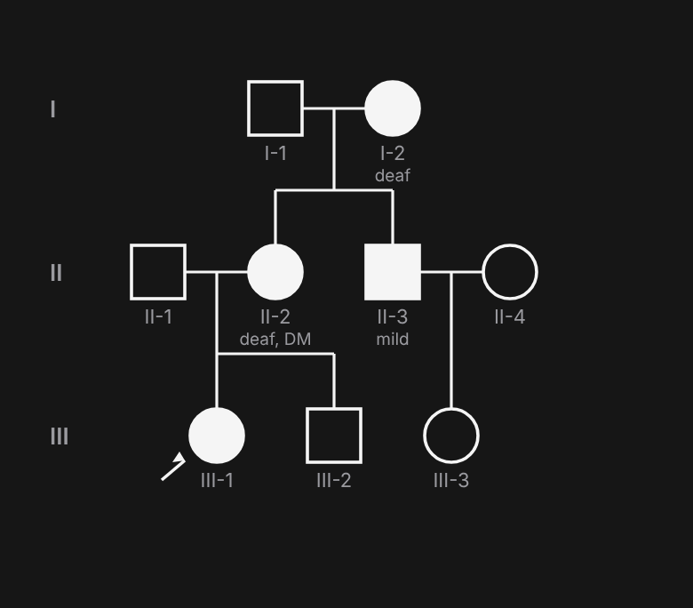
Alt: Three-generation pedigree: affected grandmother; her daughter and son are affected; the daughter’s daughter (proband) is affected and her son is not; the affected son’s daughter is unaffected.
Text description: Pedigree. Generation I: I-1 male, unaffected; I-2 female, affected (deaf). Generation II: II-1 male, unaffected; II-2 female, affected (deaf, DM); II-3 male, affected (mild); II-4 female, unaffected. Generation III: III-1 female, affected (proband); III-2 male, unaffected; III-3 female, unaffected. I-1 and I-2 have II-2, II-3. II-1 and II-2 have III-1, III-2. II-3 and II-4 have III-3.
Caption: Transmission through women only; severity varies.
Validation: pass
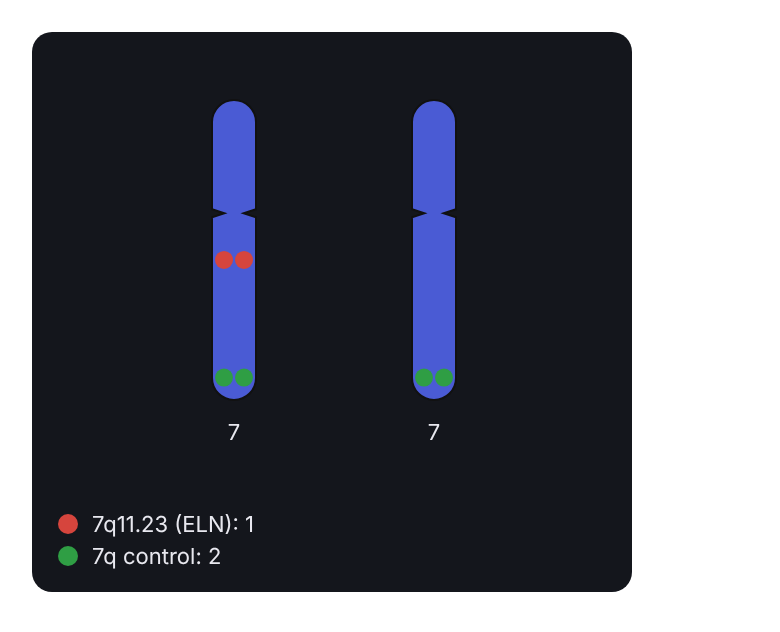
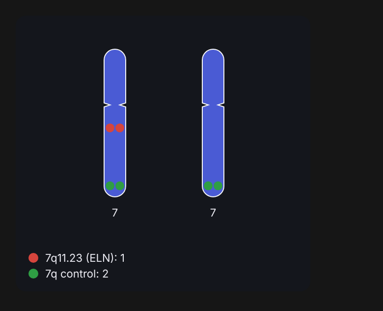
Alt: Metaphase FISH of chromosome 7: the green control probe lights both chromosome 7s; the red ELN probe at 7q11.23 lights only one.
Text description: FISH on metaphase chromosomes 7. red probe for 7q11.23 (ELN): 1 signal; green probe for 7q control: 2 signals. Red signal on only one homologue; Green signal on both homologues.
Caption: Microdeletions are below routine karyotype resolution; FISH or a microarray shows them.
Validation: pass
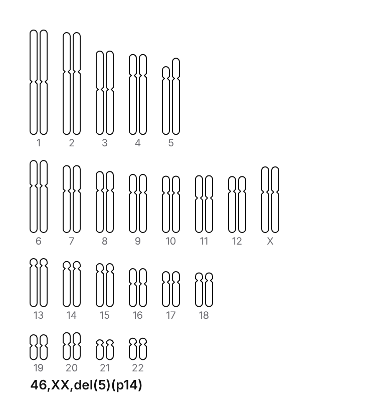
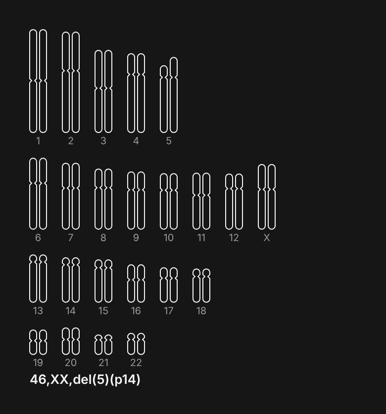
Alt: Karyogram with 46 chromosomes; one chromosome 5 has a shortened short arm (terminal 5p deletion, about 20 Mb).
Text description: Karyogram 46,XX,del(5)(p14): 46 chromosomes arranged in pairs by size; sex chromosomes XX. Changes: one chromosome 5 missing the end of its p arm (about 20 Mb).
Caption: Schematic; the deletion size is illustrative. Large terminal 5p deletions are visible on routine karyotype.